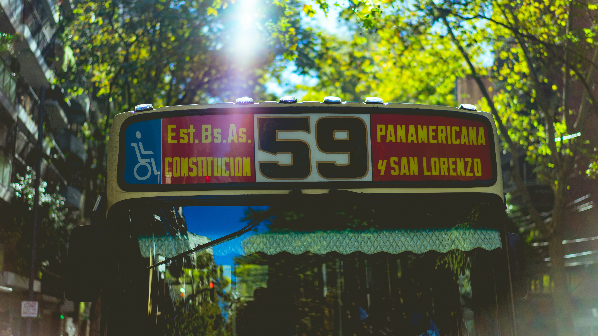

Valérie Schraauwers
Student @ Le Wagon
From: Amsterdam, the Netherlands
I wanted to learn a skill which would give me more freedom and the chance to use my creativity. Le Wagon is also located in Amsterdam, but why do it there if you can also do it in Bali? :)
See for yourself
Previous experience
For the past 3,5 years I worked for a really fun start-up, helping passengers all over the world to claim compensation for their delayed or cancelled flights. I was the Country Manager for the UK team, which meant I was responsible for how well we performed on the UK market. At some point I did not feel challenged anymore and felt like I needed a change.

|
Salsa dancingEver since I can remember, I have loved to dance! When I was younger, me and my best friend founded a dance school for children, where we taught them choreographies for our yearly show. We dissolved the company when we both started our studies in Amsterdam. That's when I discovered salsa dancing and I loved it. Not surprising because I am really into latin music. |
MusicI know it's cliche, but I love listening to basically any type of music. Amsterdam has a lot to offer in terms of music. Concerts, big or small, festivals and the yearly Amsterdam Dance Event. During this event there are hundreds of parties all over the city with the best DJs from all over the world performing their turntable skills. Even though I love electronic music, my guilty pleasure is reggaeton, whoops! Also, I started guitar lessons last year, but unfortunately I still suck.. |
|
|  |
Travel & CultureSeeing several busses passing by, and none of them stop to take me because they are too full. This was a problem that occurred every day in Buenos Aires. Not very convenient when you need to make it to school in time. This would hardly ever happen in the Netherlands, and that's why I love it. Learning from other cultures can be a very inspiring thing once you let go of the judgement ("Why are all the **** busses always so **** full?!"). |
About this page
This page has been coded during the FullStack program @LeWagon. What an awesome experience!